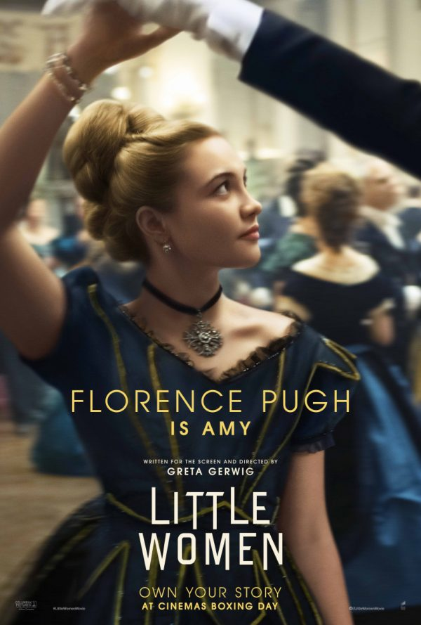
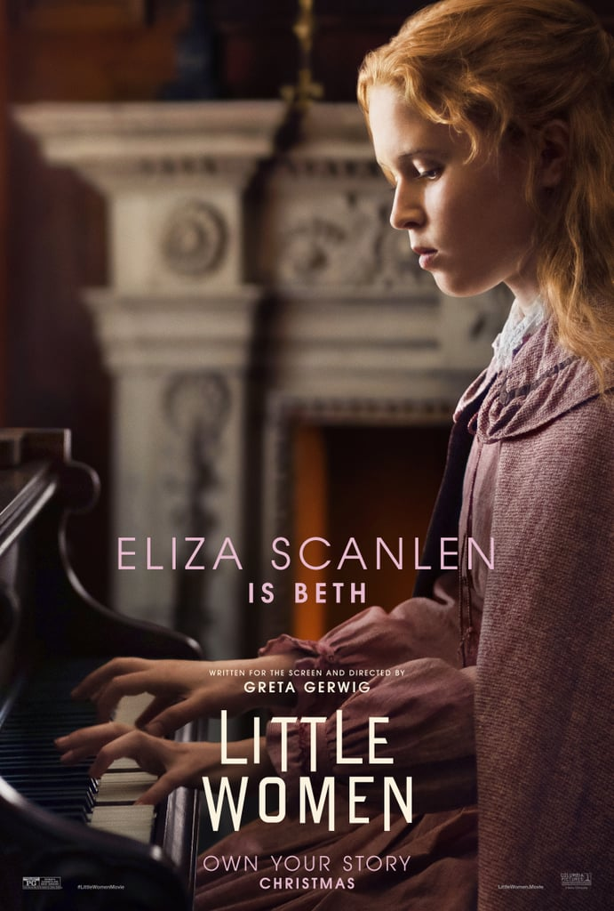
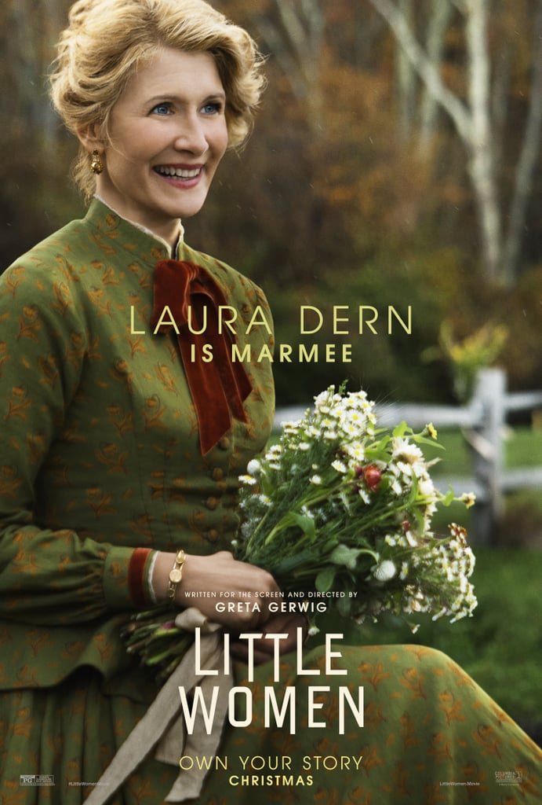
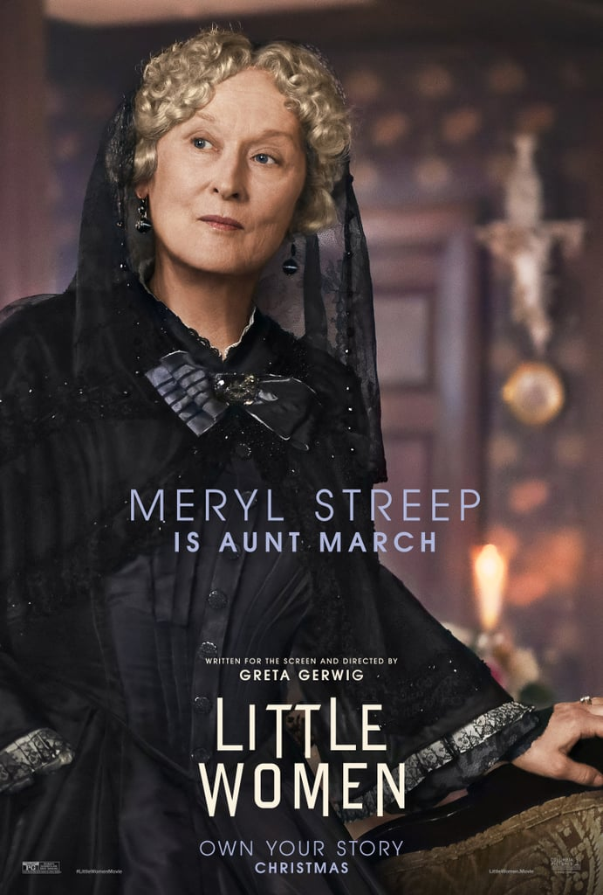

Kisasszonyok
Öt nő magára marad a házban. Az apa a polgárháborúban harcol: négy lánya és a felesége pedig kénytelen férfi nélkül boldogulni. Nem hajlandóak elfogadni azt, amit a világ kínál nekik: szabadabbak, önállóbbak, bátrabbak kortársaiknál. A négy lány, Jo, Amy, Beth és Meg együtt nő fel: reménykednek, csalódnak, tanulnak… és persze szeretnek – és közben felnőtté válnak.
Greta Gerwig, a 2017-es 5 Oscar-díjra jelölt Lady Bird író-rendezője egy nagy amerikai klasszikust visz filmre, és igazi szupercsapatot válogatott hozzá: a korábbi filmjében is szereplő Saoirse Ronan és Timothée Chalamet mellé Emma Watsont, Meryl Streepet, Florence Pugh-ot és Chris Coopert is megnyerte, hogy a maga modern, szemtelen stílusában mesélje újra a klasszikus történetet.
Legfontosabb szereplők







További információ
| Rendező és forgatókönyv író: | Greta Gerwig |
|---|---|
| Író: | Louisa May Alcott |
| Producer: | Denise Di Novi, Arnon Milchan, Amy Pascal, Robin Swicord |
| Executive producer: | Adam Merims |
| Zene: | Alexandre Desplat |
| Operatőr: | Yorick Le Saux |
| Vágó: | Nick Houy |